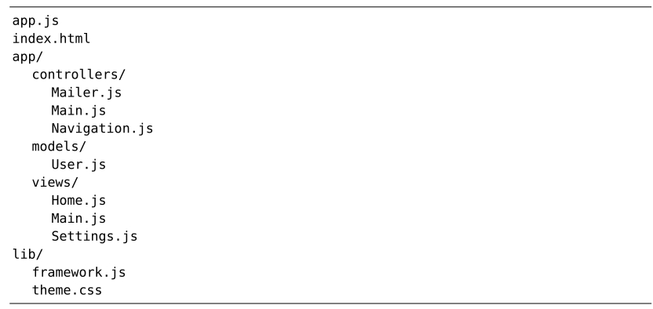

），按<Tab>键会将其展开，使之显示为活动缓冲区的完整文件路径。虽然这不是我们想要的结果，但是已经很接近了。现在再试一下这条命令：
），按<Tab>键会将其展开，使之显示为活动缓冲区的完整文件路径。虽然这不是我们想要的结果，但是已经很接近了。现在再试一下这条命令：技巧41用:edit命令打开文件
在Vim中，:edit命令允许通过文件的绝对路径或相对路径来打开文件。另外，我们也将学会如何指定一个相对于活动缓冲区的路径。
我们将使用files/mvc目录做讲解，你可以在随本书发布的源文件中找到它。其目录树的结构如下：

在 shell 里，我们先切换到files/mvc目录，然后再启动 Vim：
➾ $ cd code/files/mvc
➾ $ vim index.html
相对于当前工作目录打开一个文件
在Vim 中也有工作目录的概念，这和 bash 及其他 shell 是一样的。当 Vim 启动时，它会采用shell的活动目录作为其工作目录。这一点可以通过执行:pwd命令得到印证，pwd 意为“打印工作目录”（print working directory，这和 bash 是一样的）：
➾ :pwd
《 /Users/drew/practical-vim/code/files/mvc
:edit {file}命令可以接受相对于工作目录的文件路径。因此，如果想打开lib/framework.js文件的话，可以执行下面这条命令：
➾ :edit lib/framework.js
或者，用下面的命令就可以打开app/controllers/Navigation.js：
➾ :edit app/controllers/Navigation.js
另外，我们也可以用 Tab 键自动补全文件路径（更多细节参见技巧32）。因此，如果想打开Navigation.js文件的话，实际上只需输入:edit a<Tab>c<Tab> N<Tab>。
相对于活动文件目录打开一个文件
假设我们正在编辑app/controllers/Navigation.js，紧接着我们要编辑同一目录下的Main.js。一种做法是输入从工作目录开始的路径，直到抵达该文件，然而这似乎有点儿舍近求远。想打开的文件和活动缓冲区中的文件在同一个目录里，如果能用活动缓冲区作参考点岂不是更理想吗？按照这一思路，我们先尝试一下这条命令：
➾ :edit %<Tab>
%符号代表活动缓冲区的完整文件路径（参见:h cmdline-special），按<Tab>键会将其展开，使之显示为活动缓冲区的完整文件路径。虽然这不是我们想要的结果，但是已经很接近了。现在再试一下这条命令：
➾ :edit %:h<Tab>
:h 修饰符会去除文件名，但保留路径中的其他部分（参见:h ::h）。在此例中，输入的%:h<Tab>会被展开为当前文件所在目录的路径：
➾ :edit app/controllers/
接下来，我们就可以输入Main.js了（或是按 Tab 键自动补全该文件名），然后Vim 就能够打开此文件了。因此，我们总共只需输入下面这些内容：
➾ :edit %:h<Tab>M<Tab>
既然%:h扩展项这么有用，你可能想为它创建个映射项。在下面的“轻松展开当前文件所在的目录”中给出了一些建议。
轻松展开当前文件所在的目录
试着把下行内容加入你的vimrc文件：
cnoremap <expr> %% getcmdtype( ) == ':' ? expand('%:h').'/' : '%%'
现在，当你在 Vim 的命令行提示符后输入%%时，它就会被自动展开为活动缓冲区所在目录的路径，就像你输入了%:h<Tab> 一样。这一映射项不仅可以很好地与:edit命令协同工作，还可以使其他的 Ex 命令，例如:write、:saveas及:read等，变得更加方便。
想了解更多此映射项的用法，请参阅 Vimcasts 上关于 :edit 命令的专题(1)。